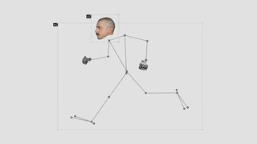
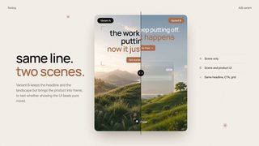
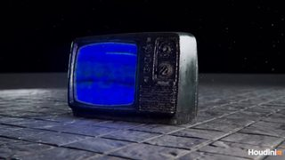

点封面在页面里播放（Vimeo / YouTube / X 需要代理；Vimeo 若没自动开始，再点一下播放键）。觉得好就点「喜欢」，有想法就写在下面的框里保存，我每天出日报前会读，存进偏好和审美库；会多找同类，但每天仍保持类型分散。
目录 01 Fluo 发布片（Write messy. Send perfect.）02 Manta 椅子发布片（Fursys）03 HP 限量版 Scuderia Ferrari AI PC04 Delta Cafés 网站（Awwwards 11-13 当日最佳）05 They Are Coming（投影在木头方块上的 WebGL 视觉）06 Gooey Sticky Menu（会拉丝的液体菜单）07 线香花火 30 秒（全部用代码写）08 the impossible toggle09 How Quiet Are the World's Quietest Rooms?10 PLUS（个人短片）－ 剔除（11 条）拆 细拆：Fluo 发布片的「改错高亮」、像素方块转场和卡点
01 字体版式 UI动效
Fluo 发布片（Write messy. Send perfect.）
Dominik Mészáros（@kcinimoDM） · X 2026-11-12 【看过视频】
X 36.4 秒全片完整看过（看片工具），下面有细拆
作者说语音段底色翻成荧光绿是故意的：先让人感觉到模式变了
字体未识别（像 Inter / SF Pro 一类的粗体无衬线）
好在哪 36 秒，墨绿底。一句打错字的英文被划掉、改正的词亮一块荧光绿底，然后整屏粗字「Write messy. Send perfect.」。中间一片绿色像素方块扫过换场，讲语音时整个底色翻成荧光绿，结尾像素数字计数器接 logo可借 工具实测里演示「改前改后」：错的划红线，改对的词垫一块强调色。换到另一个功能时让底色整个翻成强调色，观众不用读字就知道换模式了。下面有细拆
展开全文
02 3D质感 字体版式
Manta 椅子发布片（Fursys）
Reframe Studio（首尔） · Stash 2026-11 【看过画面（抽帧）】
59.6 秒全片已下载，抽 12 帧看过
椅子由 Jehs+Laub 设计（Stash）
黄色标题字体未识别
好在哪 60 秒 CG 产品片。开头是竖条纹玻璃后面一个模糊的轮廓，接一行巨大的黄色「Manta」压在椅背上。中段把椅子局部塞进一个个内嵌画框里：云朵、橙色褶皱布料、沙子从椅背流下，颜色只有灰白、海军蓝和橙可借 产品片不一定整屏铺满：把产品特写放进画面中央的一个小画框里，框外留纯色底，像杂志排版。片名只出现在开头和结尾，用一种亮色大字压在产品上
展开全文
03 3D质感 MG
HP 限量版 Scuderia Ferrari AI PC
HP Studio × Estupido.Estudio · Motionographer 2026-11-13 【看过画面（抽帧）】
68 秒全片已下载，抽 12 帧看过
基本都是 CG，几乎没有转场效果，靠硬切
好在哪 68 秒。红色机身只用极近的特写和光扫过边缘来表现，中间插一个白底俯拍零件平铺、一面起伏的金属点阵、透明外壳下的主板。颜色只有法拉利红、黑、白，结尾白底黑字加一行限量编号可借 测一台新电脑或手机时，开头不拍全貌：先用三四个极近特写，让一条光沿着边缘滑过去，最后才拉开露出整机。零件平铺俯拍可以当讲配置的那一页
展开全文
04 字体版式 转场
Delta Cafés 网站（Awwwards 11-13 当日最佳）
Burocratik / Awwwards · X 2026-11-13 【看过画面（抽帧）】
13 秒已下载，抽 12 帧看过
网站滚动录屏，不是成片
字体未识别（大字是细体无衬线）
好在哪 13 秒录屏。深咖啡色底，细体大字「60 YEARS OF STORIES」叠在麻袋堆照片上，一个椭圆窗口从中间撑开露出全家福。然后年份「1931 — 1945」超大细字居中，小照片从下面升上来，最后翻到一张撕边的旧报纸版面可借 讲一个产品或公司的历史：年份用超大细字居中，照片小小地从下面升上来，换年代时用一个椭圆或圆角窗口撑开下一张图。整片只用咖啡色和米白两个颜色
展开全文
05 代码动画 剪辑节奏
They Are Coming（投影在木头方块上的 WebGL 视觉）
Pat Heintzmann（@PatHeintzmann）/ Codrops · X 2026-11-13 【看过画面（抽帧）】
38 秒已下载，抽 12 帧看过
实拍的是现场投影，画面本身全是代码（Codrops 帖文）
15 种效果，作者自己写了时间轴工具
好在哪 38 秒。黑暗里一个胶合板方块，用小投影仪把浏览器里跑的 WebGL 画面投上去：先是细线框，然后方格、同心方框、条纹、九宫格一种换一种，每次换都踩在鼓点上。后段侧边飘出一列列绿色小字可借 想做「音画卡点」又不想花哨：只给一个简单几何体（方块），每个鼓点换一种黑白图案。在 Three.js 里就是一个立方体加按节拍切换的贴图，背景全黑
展开全文
06 代码动画 UI动效
Gooey Sticky Menu（会拉丝的液体菜单）
Codrops · X 2026-11-13 【看过画面（抽帧）】
24 秒已下载，抽 12 帧看过
附源码（Codrops 演示）
Origin 字体未识别
好在哪 24 秒。黄褐底上一个大字「Origin」，下面一条琥珀色的小菜单。往下滚时菜单碰到照片会粘住，扯出几根像蜂蜜一样的细丝，拉长后啪一下断开。演示里有果冻、蜂蜜、芦荟、焦糖几种材质可借 竖屏短内容里元素之间的「连接感」：两个卡片分开时拉出一根会断的细丝，比直接淡出更有物理感。颜色收在一个暖色系里，不显得廉价
展开全文
07 代码动画 3D质感
线香花火 30 秒（全部用代码写）
SF Create（@sfc43588） · X 2026-11-14 【看过画面（抽帧）】
X
30 秒已下载，抽 12 帧看过
three.js（帖文标签）
好在哪 30 秒。夜里湖边，月亮倒映在水上，一支线香花火从点燃到火花炸开成伞形细丝，再慢慢变小、火球掉到地上冷掉变暗。全片一个固定镜头，只有花火在变，地面被火光照亮的范围跟着火花大小变可借 「一个东西的一生」这种结构很适合做片尾：固定镜头、只让一个主角从小到大再熄灭，环境光跟着它变。代码里把地面亮度绑在火花强度上，就是联动
展开全文
08 UI动效
the impossible toggle
jhey（@jh3yy） · X 2026-11-13 【看过画面（抽帧）】
27 秒已下载，抽 12 帧看过
小熊是像素风，偏卡通，取的是小剧场思路
好在哪 27 秒。黑底一个绿色开关，点开后一只戴帽子的像素小熊从开关里探出来把它关回去，冒出「OOPS」「HANG ON」小气泡。后面开关被炸成白色碎块又拼回来，按钮上换成粉色叉可借 讲一个「怎么都关不掉」的设置或者弹窗时，可以做成这种小剧场：一个开关加一个会反抗的小角色，比文字吐槽更好笑。角色可以换成鱼知道自己的小形象
展开全文
09 知识讲解 数据可视化
How Quiet Are the World's Quietest Rooms?
Cleo Abram · YouTube Shorts 2026-11-13 【看过画面（抽帧）】
50 秒全片已下载，抽 12 帧看过
刻度尺段约 4–20 秒
字幕字体未识别（全大写粗无衬线）
好在哪 50 秒竖版。在消声室里手持自拍讲，中间切到一张墨绿底的分贝刻度尺：喷气机、大象、地铁、说话、呼吸一个个标签从上往下落位，再滚到 0 以下。之后一个荧光绿「-20.6」数字直接叠在实拍上可借 讲一个数字有多大或多小：做一根竖着的刻度尺，把几个大家熟悉的东西当标签钉在上面，镜头再滑到你要讲的那个值。强调色只用一种荧光绿
展开全文
10 MG 剪辑节奏
PLUS（个人短片）
Renaud Hallée（蒙特利尔） · Stash 2026-11 【看过画面（抽帧）】
下载了前 2 分钟，抽 24 帧看过
纯 2D 扁平，和你偏好的立体感不同，收它是因为节奏
好在哪 开头蓝灰底上只有一个白色加号，旁边小数字在数。随着音乐一个个积木块拼上来、铺满一屏，然后整片底色换成酒红、图案像潮水一样从左边推过去，再换成黑底电路板一样的白线。每一下变化都踩着音乐可借 做片头倒计时或者列清单时：一个简单符号按拍子一个个复制排满屏，再一拍全部换颜色。全靠节奏，不需要复杂素材。偏扁平，取的是卡点的精确度
展开全文
剔除（11 条） 
Andrea Aurelio Napoli / GSAP · 灰底火柴人在跑，脑袋是照片，内容太单薄

Dominik Mészáros（@kcinimoDM） · 8 秒左右滑块对比，变化太少；同作者已选 Fluo
Ilya Miskov 转发 · AI 生成的政治人物恶搞片

Massimiliano Matteo Tritelli / Houdini School · 7 秒流体特效，偏炫技
Johnny Harris · 前 2 分钟基本是旅行实拍，地图只闪一下
Bloomberg Originals · 以访谈为主；把数据写在游戏里的高速路牌上这个点子不错，但只有一处
Wendover Productions · 卫星地图加素材，常规
Framestore / Arts and Sciences · CG 动物写实广告，偏实拍叙事
今日细拆 · 字体版式
一个绿色、一种转场、全踩鼓点：Fluo 发布片的字卡和改错高亮怎么做 【看过视频】 Dominik Mészáros 11 月 12 日在 X 发的 Fluo（会帮你改错字、改语气的手机键盘 App）发布片，横版 36.4 秒，看片工具完整看完了全片。好学的是三件事：一句错字被红线划掉、荧光绿块一盖就改好；段落之间全用一种像素方块擦屏；字卡和换场全部卡在鼓点上，字本身不做任何缓动。
结构（36.4 秒） 0:00.0–0:05.6 墨绿黑底，四角小 UI。灰字打出一句错字英文，停一下，绿色「Fix」按钮弹出、被点一下，句子改好 0:05.6–0:07.5 字卡「Write messy.」接「Send perfect.」 0:07.5–0:13.5 五种语言快速轮播（斯洛伐克语、匈牙利语、捷克语、波兰语、德语），每种都是同样的改错演示 0:13.5–0:15.5 字卡「One tap.」接「Your language.」 0:15.5–0:23.4 语音功能：整个底色翻成荧光绿，录音界面的波形跟着口播动，0:22.0 变形成灵动岛通知 0:23.4–0:26.5 字卡「Ask anything. Reply in a tap.」，0:24.7 聊天界面滑进来给出回复建议 0:26.5–0:28.6「Your keyboard. Your look.」，0:27.0 几张不同颜色的键盘主题扇形展开 0:28.6–0:31.5 隐私段：像素字计数器从 114 往下跳到 00，旁边出「messages stored. Ever.」 0:31.5–0:36.4 片尾：两个 0 合成一个绿方块，变成 logo「fluo.」的句号；0:32.0 logo 出现，之后约 2.5 秒里标语和网址依次弹出，整版停约 4.5 秒到结束 节奏 开头改错段 5.6 秒，字卡每张约 2 秒（5.6–7.5、13.5–15.5），五种语言挤在 6 秒里（平均每种约 1.2 秒），全片最长的是语音段约 7.9 秒，片尾 logo 整版停约 4.5 秒。快的地方是语言轮播和计数器（约 1 秒跳完，0:28.7–0:29.8），慢的地方只有语音段和片尾。
改错段的小节奏：39 个字符在 0:00.6–0:02.8 打完（每秒约 17–18 个），停约 0.6 秒才弹出「Fix」，再停约 0.7 秒才点下去（按钮缩一下再弹回）；0:04.3 红线划过，0:04.4 绿块盖上。这两次停顿就是给观众读错句的时间。
改错高亮（最值得偷的一招） 打字用中灰（约 #888888），一看就是「还没改好的草稿」 红删除线从左往右划过整句，只用约 0.1 秒（30fps 下 3 帧），快到像「唰」一下 0.1 秒后荧光绿块按词或短语直接出现（1 帧硬切，不擦、不冲过头），盖住旧词，改好的字立刻露出来 绿块是直角，上下边紧贴字的上伸和下伸部分，像荧光笔，不是圆角按钮 声音：每个字一声机械键盘音，点按钮一声「咔」，改完一声轻「叮」 转场（全片只用 3 种） 像素方块擦屏：一层粗方格，从上往下逐块出现或放大把下一屏盖出来。0:05.6 那次约 0.5 秒（15 帧），之后 0:07.5、0:13.5、0:15.5、0:23.4 都是约 0.3 秒（10 帧），每次都落在鼓点上 硬切：0:26.5、0:28.6 两处，也踩在拍点上 数字变 logo：0:31.5 两个像素 0 滑到一起并成一个绿方块，直接成为「fluo.」的句号，配一声重低音 对照动效实现规则 字卡和高亮块：全部硬出现，没有缓动、缩放、回弹。这和规则第 1 节「小元素 12 帧 ease-out」不同，是刻意的卡点风格；照做时文字进场时长设 0–1 帧，关键帧放在拍点上（符合规则第 4 节「默认硬切配拍点」） 手机和 UI 位移（0:24.7 聊天界面、0:27.0 键盘主题）：很陡的 ease-out，一下冲到位再顺下来，不回弹，15–20 帧停稳。直接套规则的大元素进场：Easing.bezier(0.16, 1, 0.3, 1)，18–20 帧 灵动岛变形（0:22.0）：比别处软一点、带一点苹果式的弹。对应规则的「有意的弹跳」spring（damping 8–10），全片只此一处，没超过规则说的 1–2 处 计数器：数字不滚动不翻牌，每个值硬切。看片工具记到 114 → 68 → 37 → 09 → 00；我抽帧在 0:28.8 还看到一个 50，所以中间实际不止这几个数 转场 3 种、着色器类只有像素化 1 种，正好在规则第 4 节的上限内 颜色：一个底色加一个强调色（荧光绿），红色只出现在删除线上。符合规则第 6 节「一个主色 + 一个强调色」 字体和颜色 标题字体未识别（像 Inter / SF Pro 一类的粗体无衬线），字距略紧、左对齐。四角小 UI（例如「EN · ENGLISH」）是等宽字，计数器和小图标是 8-bit 像素字，这两种也未识别。
#0F1412 底色：带一点绿的深灰#BEF264 荧光绿：高亮块、语音段底色#F85E48 红：删除线#888888 灰：没改好的草稿字#FFFFFF 白：标题和改好的字
声音 一条低音很重的电子乐，每次擦屏、字卡弹出、语言切换都落在底鼓或军鼓上 键盘声和打字速度一一对上，按钮配「咔」，改完配「叮」 语音段（0:16.0 起）的绿色波形跟着口播「grab milk and bread...」的音节和音量起伏 在 Remotion 里怎么做（我的做法建议） 先定配乐 BPM，把每次擦屏、字卡、语言切换的起点写成拍点帧数组，所有组件都从这个数组取起点 打字：text.slice(0, Math.floor((frame - start) * 18 / 30))，约每秒 18 个字；每个字的那一帧放一个键盘音 <Audio> 删除线：一条红色 div，宽度用 interpolate(frame, [s, s+3], [0, 100], {easing: Easing.bezier(0.16, 1, 0.3, 1), extrapolateRight: 'clamp'}) 从 0% 到 100% 高亮块：frame >= s + 3 时直接渲染绿色直角块和改好的词，不做动画，同一帧放「叮」 像素擦屏：把画面切成 16×9 的方格，每格的延迟 = 行号 × 每行帧数 + 一点抖动，抖动用 Remotion 的 random('px' + i)（有种子，每次渲染一样）。每格到点直接出现，总长 10 帧（开头那次 15 帧） UI 滑入：用 Easing.bezier(0.16, 1, 0.3, 1)，18–20 帧；灵动岛那一下单独用 spring({damping: 9}) 计数器：一个数组按帧硬切，像素字可以自己用 5×7 的方格点阵画，和擦屏方块同一个格子尺寸，片尾两个 0 合成的那块方块就能自然变成 logo 的句号 放进鱼知道的片子里怎么用 工具实测里的「改前改后」：先用灰字快速打出你原来的提示词或文案，停半秒让人读，红线 3 帧划掉，下一拍荧光绿块盖上改好的版本，配一声「叮」。段落之间只用一种像素方块擦屏，全片不再加别的转场。片尾可以让一个数字（比如省下的分钟数）像计数器一样跳到 0，再并成鱼知道标志里的一个元素。
看原帖 ↗ 作者讲配色切换 ↗
X（@jh3yy、@codrops、@awwwards、@greensock、@threejs 转发、@motionographer、@60fpsdesign、@cleoabram、@kcinimoDM、@sfc43588、@HoudiniSchool 等、关键词搜索）、Vimeo Staff Picks、Motionographer、Stash、Codrops、YouTube（Vox、Cleo Abram、Kurzgesagt、Bloomberg Originals、Wendover、Johnny Harris、Jared Owen、Apple、3Blue1Brown、PolyMatter、Animagraffs、Branch Education、MKBHD）
 X
X